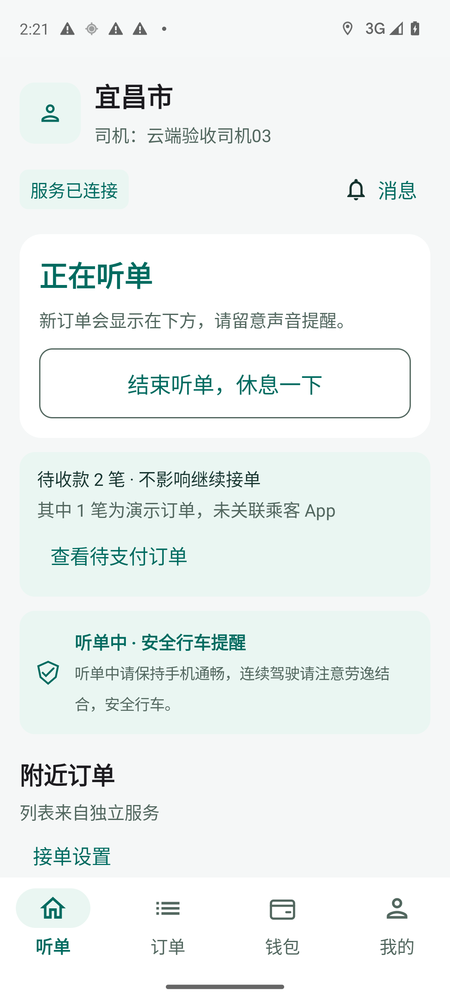
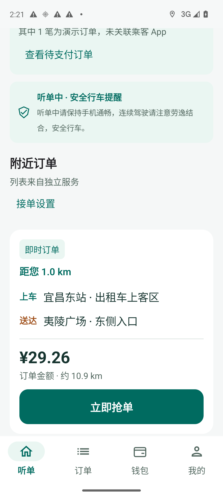
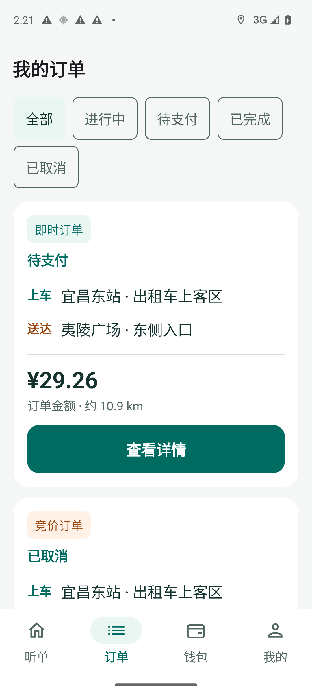
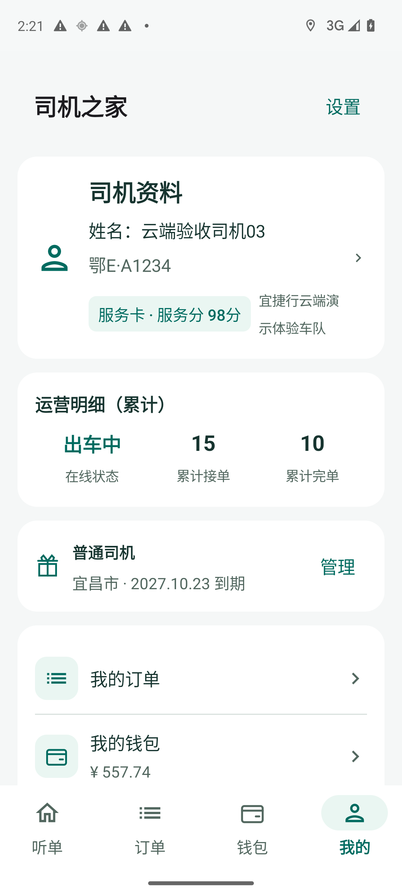
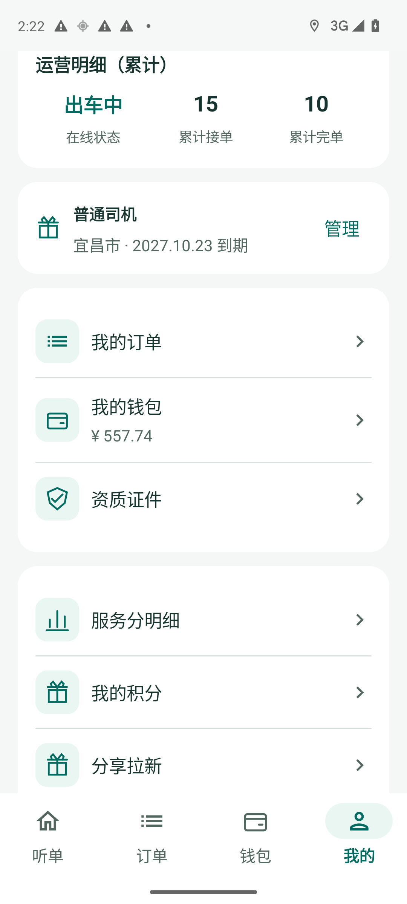
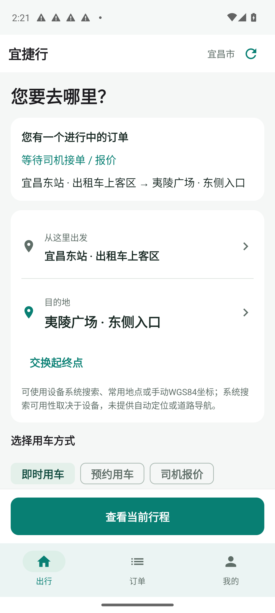
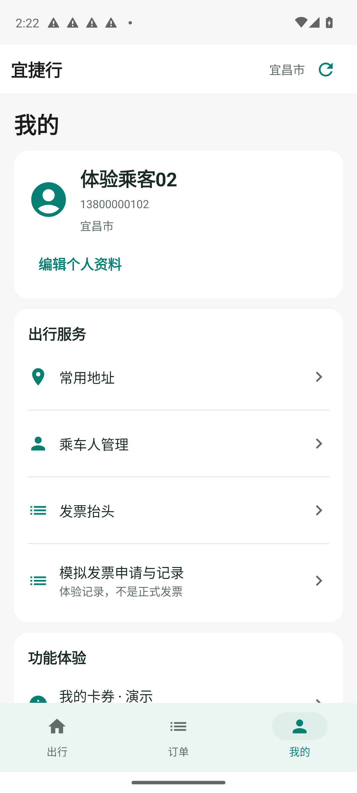
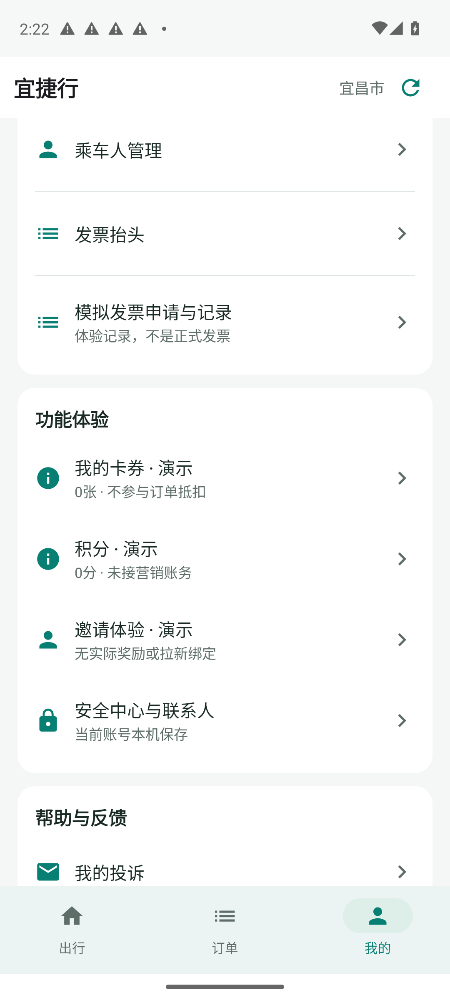
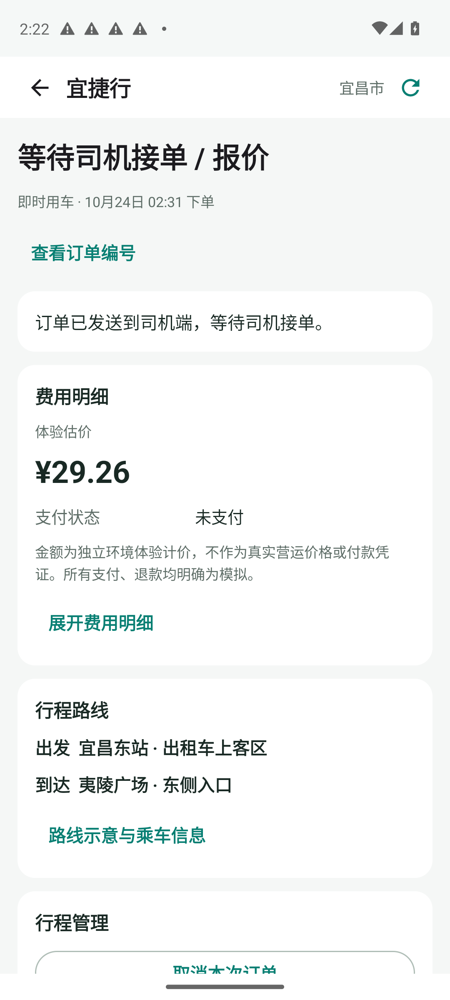

1. 司机首页首屏

接单入口被信息块压到首屏之外
- 身份与服务连接、听单卡、待收款卡、安全提醒连续堆叠；首屏只出现附近订单标题，不见实际单卡或接单按钮
- 结束听单按钮视觉权重大于真实接单目标，信息提示与主操作争夺注意力
压缩顶部身份和状态；待收款/安全提醒保留但改轻量摘要，把首张可接订单和动作优先留在首屏
仅现状与可用性记录，非新设计或业务验收。首张带系统通知的旧图已拒用。未接单、付款或取消。

接单入口被信息块压到首屏之外
压缩顶部身份和状态；待收款/安全提醒保留但改轻量摘要，把首张可接订单和动作优先留在首屏

可用但单卡高度过大
保持起终点/金额/接单动作清晰，收紧辅助信息和重复说明；不可仅全局缩字号

可用但列表密度低
分类用清楚的一行可横向浏览或紧凑选项；历史订单卡以状态/路线/金额为主，详情动作降为清晰次级入口

资料正确但层级与排版需调整
企业名独立成行，合并身份/服务分摘要；运营与钱包信息有明确主次，会员不抢关键功能空间

菜单可达但空间利用松散
保留大触点，减少图标底板和容器重复留白；常用钱包/订单/资质集中，营销权益置后

当前行程可达但新叫车表单与现有行程竞争
已有订单时优先展示行程状态与路线，收起新叫车表单；技术说明保留为必要时可展开帮助，不伪造地图/定位能力

信息清楚但纵向占用偏大
与司机端统一品牌色/圆角/导航选中态；身份信息紧凑分组，关键安全与常用服务更易发现

演示标识清楚，分组仍可改善
安全独立分组并标明本机能力；演示营销保持独立弱化且不假装实际资产，统一行高/说明层次

状态与金额可见，信息组织偏长
状态标题按真实单型呈现；聚合状态/路线/金额摘要，辅助编号/长说明按需展开，取消等操作保持明确而不误触